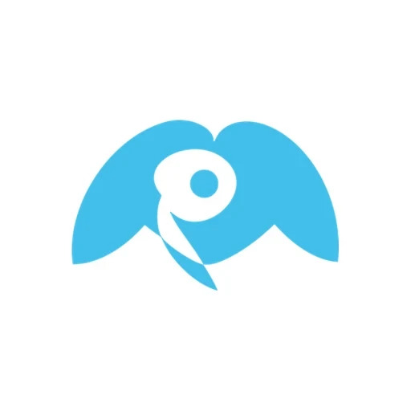
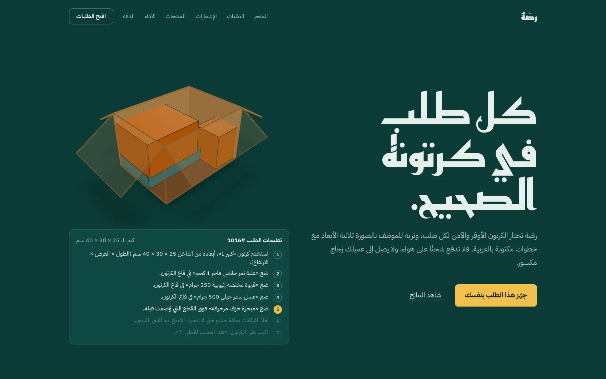
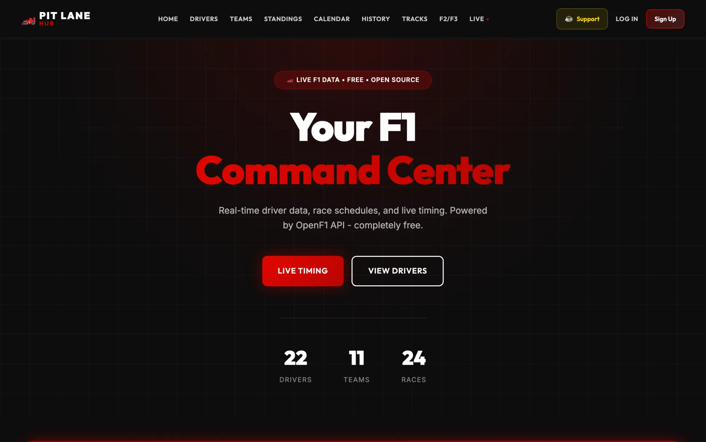
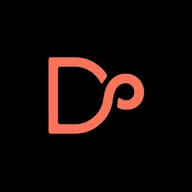

Abdulaziz Alkhlaiwe
AI Product & Systems
I turn user and business problems into requirements, system workflows, API integrations and shipped products.
AI Product & Systems
I turn user and business problems into requirements, system workflows, API integrations and shipped products.
6,373 contributions in the last year
Every point is a week on GitHub, from 26 October 2025 to 26 October 2026. 299 active days, and a run of 77 days in a row that is still going.
This week:
Selected work

Mara
An AI-powered health and wellness platform.
- What I did
- Product requirements, AI workflows, APIs, QA, analytics and system integrations.
- Outcome
- 38 private beta users. Completed Misk Launchpad Cohort 9. Incubated at Monsha’at.
- Requirement
- Show today's health target only when the backend has a valid one for that exact day. Otherwise show nothing, never a guess.
- Flow
- Read the profile and the local date
- Fingerprint the fields that change the target
- Fetch it through the provider and repository
- Accept only valid v2 data for that day
- Format the result for each screen
- Decision
- Validated backend targets only.Over client-side formulas, cached goals or a v1 fallback. The backend owns the calculation, so no screen invents a substitute. When a target is missing, comparisons hide and the recorded data stays visible.
Echo
A 0-to-1, privacy-first photo-memory app for iPhone.
- What I did
- Product development, UX, monetization, analytics and release management.
- Outcome
- 1,176 active users in the last 28 days. Rated 4.8 on the App Store, in 37 languages, now on version 1.45.
- Requirement
- People with years of photos rarely look back at them. Surface one photo a day from their own library, processed on the device and never uploaded.
- Flow
- Open Today
- See a photo from your camera roll
- Keep it
- Add words or a voice note, if you want
- Save, and Today moves on
- The saved photo stays off Today, even after relaunch
- Decision
- Start from photos people already have.Over a blank journal page or an upload service. No account and no server copy of anyone's photos.
- Result
- 1,176 active users in the last 28 days. In a simulated library of about 2,700 photos, 40 picks in a row had no two from within three days.
Daleelk
An AI-powered travel platform for the Gulf.
- What it does
- Natural-language assistance, personalized trip planning and traveler safety.
- How
- The OpenAI API grounded in a local knowledge base. FastAPI, Supabase and Firebase Auth. A King Saud University team project.
- Requirement
- Ask for a three-day trip and get at most three dated days, with the activity, meal and cafe counts you asked for and no overlapping times.
- Flow
- Sign in
- Start a new trip
- Enter a destination and a start date
- Get a day-by-day schedule
- Decision
- Answer itinerary questions first, then offer the planner.Over sending people straight to the planner. They get guidance before the builder opens.
Rassah
An AI packing assistant for Saudi online stores.
- Built
- End to end in two days, in Tuwaiq Academy's AI product programme with Startupbootcamp and Meta.
- How
- Gemini reads Arabic and English product pages, a 3D packing engine picks the cheapest safe carton, and every run is monitored in production.
- Requirement
- A small-store packer needs a safe carton even when product sizes are missing. With no usable size, ask for a measurement; never guess.
- Flow
- Enter an order number
- Use cached product facts or read them from the product pages
- Search for the cheapest carton that fits safely
- Ask for a measurement, or split into up to four cartons
- Validate the layout
- Show the carton, Arabic packing steps and the 3D layout
- Decision
- Gemini reads the product text; code packs and checks.Over letting a language model compute and approve the layout. Geometry needs exact maths.
- Result
- All 258 feasible benchmark cases produced valid layouts, on synthetic data rather than a live store.

Pit Lane Hub
Live Formula 1, F2 and F3 data. Free and open source.
- Inside
- Live timing, standings, driver comparisons, track maps and every season from 2023 to 2026.
- Why
- I follow Formula 1 closely enough to build my own timing screen.
- Requirement
- Follow a session live: timing and positions, or the entry list when no live data is coming in.
- Flow
- Open Live
- Load the session
- Show real positions, or the entry list
- Refresh every ten seconds while a session runs
- Decision
- Show the entry list when there's no live data.Over drawing a timing grid with made-up positions.
Next race Follow it live on Pit Lane Hub
Last race
,

More projects
Abdulaziz Alkhlaiwe
The full record
Side A
Side B

DocMara2026Scan, compress, convert, organise and sign files on device, in Arabic and English. iPhone, iPad and Mac. Rated 4.2.- Halo2026An open-source AI inbox agent: a morning briefing, replies drafted in your tone and rules that act on their own.
- ObsessionSystem2026Rules, skills and a delivery gate that make an AI coding agent prove its work before anything ships.
- Deadware Risk Scanner2026Finds abandoned and unmaintained open-source packages in dependency files before they break a build.
- Photo Manager2025Tag-based photo albums on hand-written data structures, for CSC 212 at King Saud University.
Liner notes
Apps
Backend and data
AI
Ship and measure
Experience and education
Computer Information Systems graduate focused on AI-powered products, technical product development and digital systems. I have built and shipped products across AI workflows, analytics, UX, monetization, QA and system integration.
-
King Saud University
B.Sc. Computer Information Systems
-
Started building Mara
Misk Launchpad Cohort 9 and Monsha’at incubation; private beta of 38 users.
-
Echo on the App Store
-
Digital Systems & Business Analysis Co-op Trainee
Air Connectivity Program
QA testing, system reviews, issue analysis and technical documentation.
-
DocMara on the App Store
-
Rassah
Built in two days in Tuwaiq Academy's AI product programme.
Skills
What I work with
AI & Automation
LLMs, prompt engineering, AI workflows, conversational AI
Product & Business Analysis
Product requirements, requirements analysis, user flows, process mapping, user stories, acceptance criteria, Agile, prototyping
Backend & Integration
REST APIs, API integration, PostgreSQL, MySQL, SQL
Programming & Data
Python, OOP, Pandas, NumPy, data analysis, data cleaning
Engineering Tools
Git, GitHub, GitLab, Docker, Linux, Jupyter, software testing, QA
Languages
Arabic, native. English, professional working proficiency.
Certifications
- 2025Cloud Engineering Solutions Program Using Google Compute Engine Tuwaiq Academy
- 2025Mathematics for Machine Learning and Data Science DeepLearning.AI
- 2025Fundamentals of Software Testing Using Agile and Automation Tuwaiq Academy
- 2024CS50's Introduction to Computer Science Harvard
- 2023HCIA-Security V3.0 Huawei
Learning in public
- Stanford CS1093 / 29
- Linear Algebra Lectures, MIT9 / 34
- Essence of Calculus, 3Blue1Brown5 / 12
- Computer Science Crash Course, CrashCourse8 / 40
- Calculus, Khan Academy4 / 199
Off the clock
Code goes better with The Beatles playing.
And most evenings end with a film. These are the four I keep coming back to.
Let's talk
Open to AI product, technical product and systems roles.